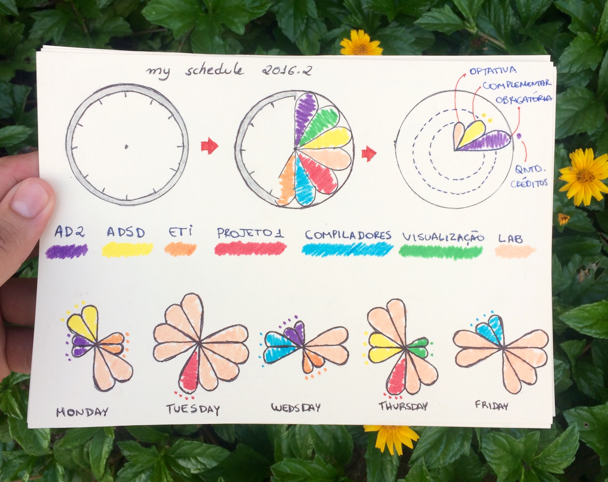
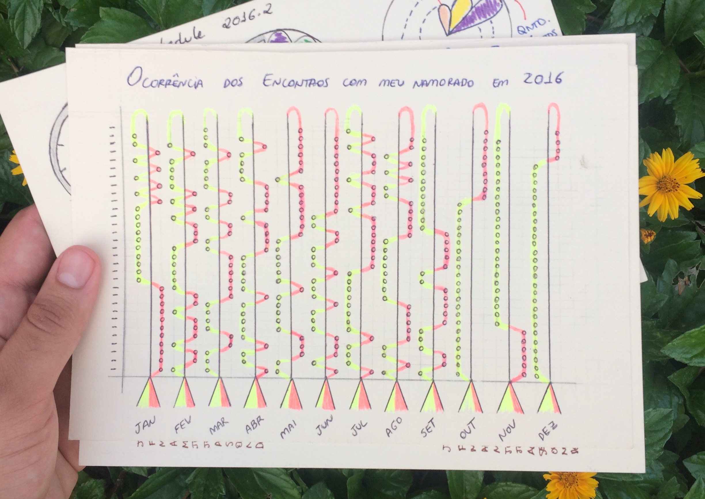
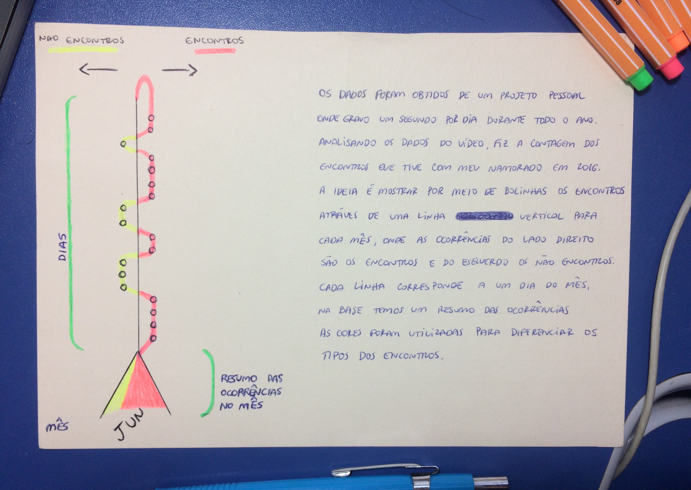
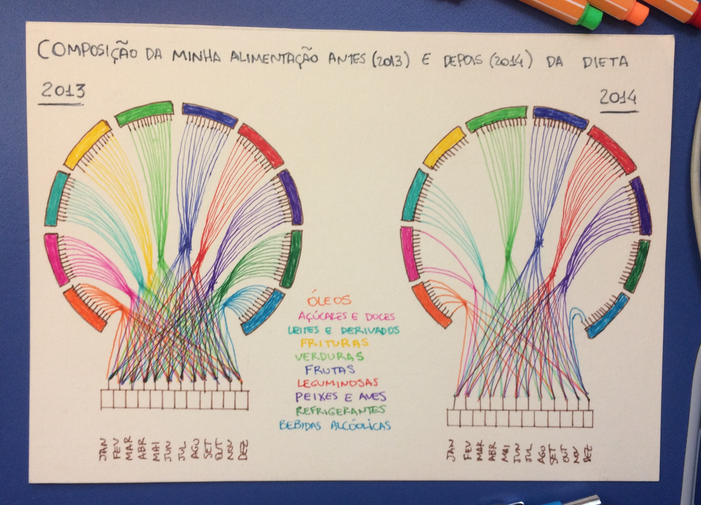
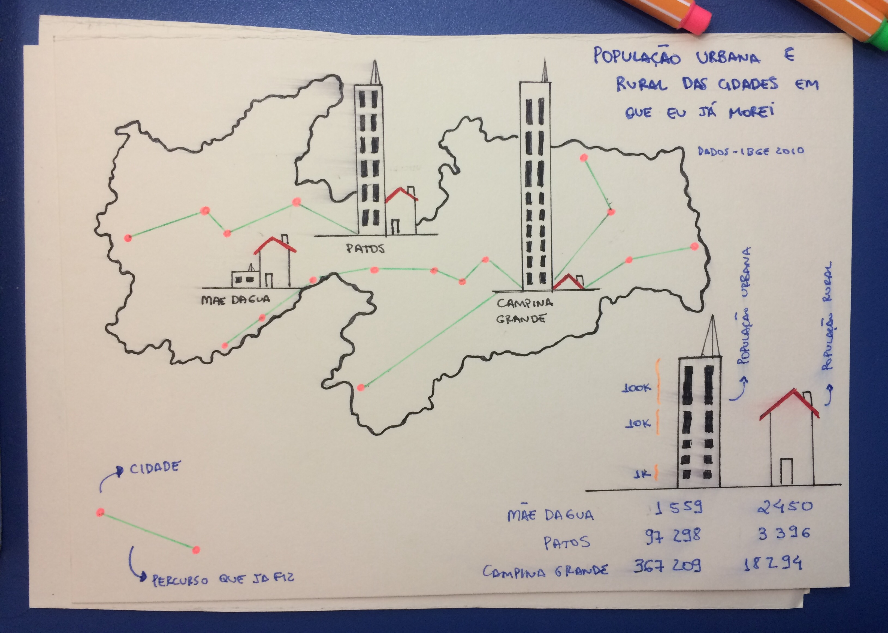

Dear Data é um projeto de desenho de dados analógicos, durante um ano duas amigas mantiveram contato através de visualizações sobre dados cotidianos, uma residia em Nova Iorque e outra em Londres, nesse período elas se correspondiam por cartões postais, para mais informações acesse o link.
Baseado nesse projeto, o professor da disciplina de Visualização de Dados, propôs que também fizessemos visualizações analógicas sobre determinados temas, para exercitarmos a habilidade de transformar dados em visualizações que permitissem (ou não) enxergá-los de uma forma diferente. E finalizando a disciplina, reuni meus trabalhos nesse post.
As visualizações
meu horário:
O objetivo seria montar seu horário de aula de forma que utilizasse canais de cores e formas.
encontros:
Nessa visualização, nós tínhamos que o montar algo utilizando dados que remetessem ao tema encontros. Para resolver essa, utilizei um projeto pessoal meu, em que eu gravo um segundo por dia, daí coletei os dados de todos os dias em que eu me encontrei com meu namorado e montei essa escala engraçadinha (ficou fofo). 
alimentação:
O objetivo dessa visualização é mostrar dados referentes a alimentação, fosse sua ou da sua família, você que escolhia, eu propus mostrar a diferença da minha alimentação antes e depois da reeducação alimentar que eu fiz. (muito orgulho dessa)
casa:
Tínhamos que criar algo relacionado a casa utilizando mapas, resolvi mostrar meu histórico de mudanças e as cidades em que morei/moro com suas os números das populações urbana e rural. Utilizei os dados do IBGE.